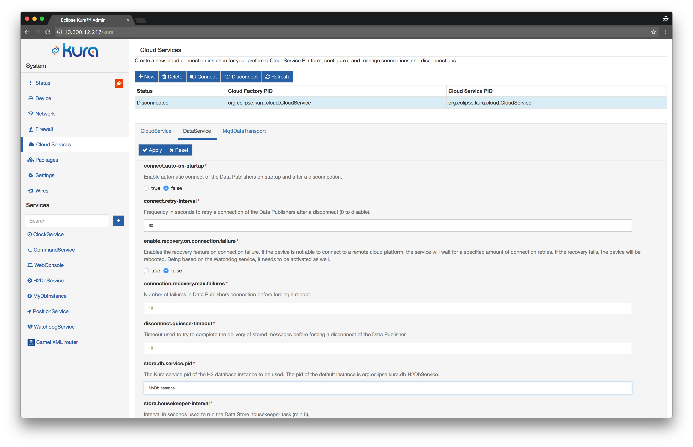

H2 Database: Features and Usage
Starting from version 3.1.0, Eclipse Kura includes the H2 database engine. This document provides a description of the main features of the H2 database integrated with Eclipse Kura and gives some basic information about its usage.
Supported Features
Eclipse Kura supports the following H2 database features:
-
Persistence modes: The H2 implementation currently supports in-memory and file-based database instances. See Persistence Modes for more details.
-
Multiple database instances: It is possible to create and configure multiple database instances from the Kura Web UI, these instances can be selectively consumed by applications. A default database instance is created automatically.
-
TCP Server: The current implementation allows external processes to access the database instances managed by Kura using TCP. This enables the integration of external applications that can share data with Kura components using the database.
-
Web based console: It is possible to start the H2 Web console directly from the Kura Web UI. The console can be used to inspect the database contents and perform arbitrary queries for debug purposes.
-
Basic credential management: The current implementation allows to change the password of the admin DB user from the Kura Web UI. This allows to restrict access to existing database instances.
Limitations
The following list briefly describes some limitations of the H2 database integrated with Eclipse Kura:
-
Private in-memory instances: Only named in-memory instances are supported (e.g.
jdbc:h2:mem:<dbname>, where<dbname>is not the empty string), private instances represented by thejdbc:h2:mem:URL are currently not supported. -
Remote connections: The current implementation only supports embedded database instances. Connecting to remote instances using the
jdbc:h2:tcp:*andjdbc:h2:ssl:*connector URLs is not supported.
Changes to database related components
The DataService in Eclipse Kura uses the H2 database by default for implementing the message store. However, there is no support for migrating an old HSQLDB database to the new H2.
The new H2DbWireRecordFilter and H2DbWireRecordStore Wire components have been added. These components provide the same functionalities offered by the HSQL based DbWireRecordFilter and DbWireRecordStore components, but using the H2 database. The legacy components will continue to be available in order to keep backward compatibility, but will be deprecated since Kura 3.1.0 and should not be used for new installations.
Usage
Creating a new H2 database instance
To create a new H2 database instance, use the following procedure:
- Open the Kura Web UI press and on the
+button in the side menu, under the Services section. A pop-up dialog should appear. - Select
org.eclipse.kura.core.db.H2DbServicefrom the Factories drop down list, enter an arbitrary name for the new instance and click Apply.
- An entry for the newly created instance should appear in the side menu under Services, click on it to review its configuration:

- Change the settings if needed and then click Apply.
For more information about the DB URL format see http://www.h2database.com/html/features.html and Persistence Modes.
It is not possible to create different DB instances that manage the same DB url. When creating a new instance please make sure that the URL specified in the db.connector.url field is not managed by another instance.
Selecting a database instance for existing Kura components
A database instance is identified by its Kura service pid. The pid for the default instance is org.eclipse.kura.db.H2DbService, the pid for instances created using the Web UI is the string entered in the Name field at step 2 of the previous section.
The built-in Kura components that use database functionalities allow user to specify which instance to use in their configuration. These components are the DataService component of the cloud stack and the H2DbWireRecordFilter and H2DbWireRecordStore wire components.
The configuration of each component contains a property that allows specifying the service pid of the desired instance:
-
DataService  The pid of the database instance can be specified using the store.db.service.pid field.
-
DbWireRecordFilter
 The pid of the database instance can be specified using the db.service.pid field.
The pid of the database instance can be specified using the db.service.pid field. -
DbWireRecordStore
 The pid of the database instance can be specified using the db.service.pid field.
The pid of the database instance can be specified using the db.service.pid field.
Enabling the TCP Server
The TCP server can be used by creating an H2DbServer instance:
-
Open the Kura Web UI press and on the
+button in the side menu, under the Services section. A pop-up dialog should appear. -
Select
org.eclipse.kura.core.db.H2DbServerfrom the Factories drop down list, enter an arbitrary name for the new instance and click Apply.
- Click on the name of the new server instance in the left side of the Web Ui. The configuration of the server component will appear:

-
Set the db.server.type field to
TCP -
Review the server options under db.server.commandline, check http://www.h2database.com/javadoc/org/h2/tools/Server.html for more information about the available options.
The default settings, -tcpPort 9123 -tcpAllowOthers -ifExists, configure the server to bind on port 9123, to allow connections from any host and to allow access only to existing databases.
-
Set the db.server.enabled to
true. -
The server is now listening on the specified port.
Make sure to review the firewall configuration in order to ensure that the server is reachable from the external process.
Enabling the Web console
In order to enable the H2 Web console, proceed as follows:
-
Create a new
H2DbServerinstance like in the previous section. -
Set the db.server.type field to
WEB -
Enter appropriate parameters for the Web server in the db.server.commandline field. An example of valid settings can be
-webPort 9123 -webAllowOthers -ifExists. -
Set the db.server.enabled to
true. -
The server is now listening on the specified port. Make sure to review the firewall configuration in order to ensure that the server is reachable from the external process.
-
Use a browser to access the console. Open the
http://<device-ip>:<web-console-port>URL, where<device-ip>is the IP address of the Kura device and<web-console-port>is the port specified at step 3.

{:start="7"} 7. Enter the DB URL as specified in the Kura configuration in the JDBC URL field and the credentials. Click on Connect, you should be able to access the console.

Changing the password
The prerequisite for being able to change the password is that
-
Open the configuration of the desired database instance in the Kura Web UI.
-
Enter the new password in the db.password field.
-
Click Apply.
If the H2DbServer instance fails to open a database, it will delete and recreate all database files. This behavior is aimed at preventing potential issues caused by incorrect credentials in the configuration snapshots. It is highly recommended to perform a backup of an existing database before trying to open it using a H2DbService instance and before changing the password.
Persistence Modes
The H2 database support several levels of persistence modes.
In memory
An in-memory database instance can be created using the following URL structure: jdbc:h2:mem:<dbname>, where <dbname> is a non-empty string that represents the database name.
This configuration is suggested for database instances that are frequently updated.
Examples:
jdbc:h2:mem:kuradbjdbc:h2:mem:mydb
The default database instance is in-memory by default and uses the jdbc:h2:mem:kuradb URL.
Most persistent
A persistent database instance can be created using the jdbc:h2:file:<dbpath>, where <dbpath> is a non-empty string that represents the database path.
If no URL parameters are supplied the database will enable the transaction log by default. The transaction log is used to restore the database to a consistent state after a crash or power failure. This provides good protection against data losses but causes a lot of writes to the storage device, reducing both performance and the lifetime of flash-based storage devices.
This configuration is suggested for database instances that are rarely updated. Examples:
jdbc:h2:file:/opt/db/mydb
Make sure to use absolute paths in the db URL since H2 does not support db paths relative to the working directory.
Mostly persistent
The transaction log can be disabled by appending the LOG=0 parameter to the DB URL. In this way it is possible to reduce the stress on the underlying storage device and increase performance, at the expense of a higher probability of losing data in case of power failure.
In order to reduce the probability of data losses the H2DbService performs periodic checkpoints on the database. A checkpoint forces all pending modifications to be committed to the storage device. The interval in seconds between two consecutive checkpoints can be configured using the db.checkpoint.interval.seconds property.
This configuration is suggested for database instances with intermediate update rates. Examples:
jdbc:h2:file:/opt/db/mydb;LOG=0
Filesystem tuning
The H2 database might become corrupted [1] in case of power failure. In case of file-backed database (e.g. mostly or most persistent), the following database mount options can improve database reliability, reducing the database corruption probability at the expense of reduced performance and lifetime of the flash storage devices:
data=journal: From EXT4(5) Linux MAN Page:
All data is committed into the journal prior to being written into the main filesystem.
This setting only applies to ext3/ext4 filesystems.
sync: From mount(8) Linux MAN Page:
All I/O to the filesystem should be done synchronously. In case of media with limited number of write cycles (e.g. some flash drives) "sync" may cause life-cycle shortening.
After some long running tests [1], it appears that the data=journal option alone is enough to reduce corruption probability (no corruption observed during the test).
[1] https://github.com/eclipse/kura/issues/2169
In order to apply the options above, perform the following steps:
1 - Edit the /etc/fstab row for the filesystem containing the database file, appending the desired options to the fourth column, using comma as separator. For example on Raspbian an /etc/fstab file with data=journal enabled will look like the following:
proc /proc proc defaults 0 0
PARTUUID=3920f25c-01 /boot vfat defaults 0 2
PARTUUID=3920f25c-02 / ext4 defaults,noatime,data=journal 0 1
# a swapfile is not a swap partition, no line here
# use dphys-swapfile swap[on|off] for that
2 - If the database resides on the root filesystem, the data=journal option must be specified in the kernel command line as well, by appending rootflags=data=journal. On Raspbian this can be done by editing the /boot/cmdline.txt file:
dwc_otg.lpm_enable=0 console=serial0,115200 console=tty1 root=PARTUUID=3920f25c-02 rootfstype=ext4 elevator=deadline fsck.repair=yes rootwait rootflags=data=journal